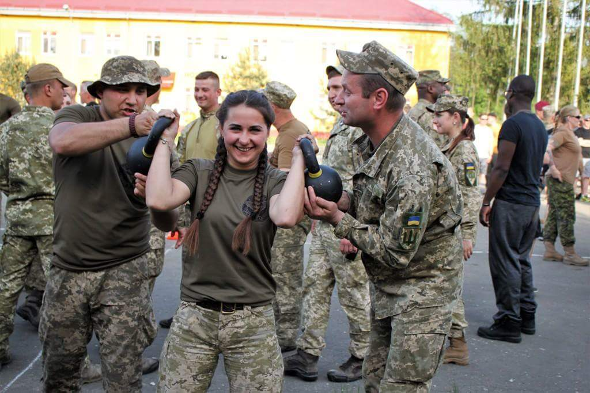

Про нас
Наша мета — сприяти розвитку фізичної культури та спорту в Україні, покращуючи здоров'я нації та підтримуючи талановитих спортсменів.
Ми прагнемо створити спортивну націю, де фізична активність є важливою частиною життя кожного.
Історія
Засноване в [рік], Міністерство спорту України з того часу стало центром підтримки розвитку фізичної культури та спорту в країні.
Наші цінності
Чесність, відмінність, доступність для всіх та командна робота — основа наших принципів.
↓
Наша команда
Познайомтеся з тими, хто робить можливим розвиток спорту в Україні.

Музика Юрій Леонідович
Перший заступник Міністра молоді та спорту України
Тимофєєв Сергій Олександрович
Заступник Міністра молоді та спорту України
Нікітенко Олексій Володимирович
Заступник Міністра молоді та спорту УкраїниФото та галерея



×

Наші досягнення
Ось кілька статистичних даних, які ілюструють наші досягнення та прогрес:
Наші досягнення у цифрах
0
Учасників подій
0
Спортивних заходів
0
Національних нагород
0
Годин тренувань
Наші послуги та ініціативи
- Громадські спортивні програми для дітей та молоді
- Ініціативи для розвитку національних спортивних федерацій
- Підтримка спортсменів у підготовці до міжнародних змагань
- Організація тренувальних таборів для професійних команд
- Програми реабілітації та фізичної підготовки для ветеранів
- Стипендії для талановитих спортсменів
- Розробка інфраструктурних проєктів для розвитку спортивних комплексів
- Проведення освітніх семінарів і тренінгів для тренерів та інструкторів
- Популяризація здорового способу життя через загальнонаціональні ініціативи
- Співпраця з міжнародними спортивними організаціями